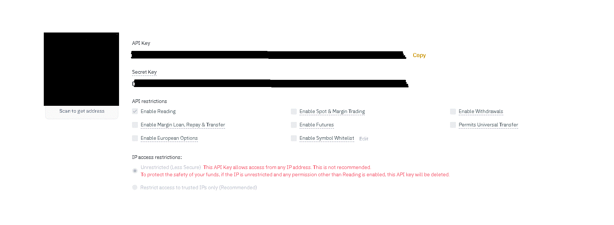

This is an application created by one person so excuse any bugs that might appear.
Before we continue you should know that in order to use my application you will need to provide me with an binance API key and an binance API secret key.
You should find enough documentation online on how to create a binance API key, what I am gonna suggest though for safety reasons, restrict every option other than reading!
it should look like this!
With this application you can optimize your binance trading experience with graphs and a cumulative overview of your account
If you have any suggestions/issues feel free to contact me in: clazaridis7@gmail.com